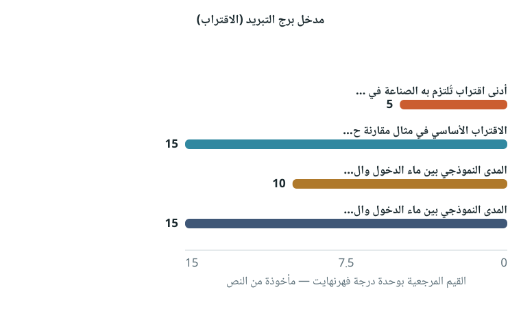

مدخل برج التبريد (الاقتراب)
Cooling Tower Approach
فرق الحرارة بين الماء البارد الخارج من البرج ودرجة حرارة البصلة الرطبة للهواء الداخل، وهو مقياس كفاءة البرج الحراري الذي يحدّده حجمه لا الحمل الحراري.
مدخل برج التبريد، أو الاقتراب، هو الفرق بين درجة حرارة الماء البارد الخارج من البرج ودرجة حرارة البصلة الرطبة للهواء الداخل إليه. وهو مقياس لقدرة البرج على تقريب الماء من الحد الأدنى النظري، لأن البصلة الرطبة هي أدنى درجة يمكن أن يبلغها الماء بالتبريد التبخيري عند ظروف الهواء تلك. ويُفرَّق بينه وبين المدى، وهو فرق درجة حرارة الماء الداخل والخارج، فالمدى يحدّده الحمل الحراري ومعدل الدوران، أما الاقتراب فيحدّده حجم البرج وكفاءته. ولهذا فإن برجًا أكبر يعطي اقترابًا أصغر عند الحمل نفسه، لكن العائد يتناقص: تقليل الاقتراب من خمس عشرة درجة فهرنهايت إلى سبع درجات يتطلب مضاعفة حجم البرج تقريبًا، بينما زيادته إلى خمس وعشرين درجة تُنجز بحجم يعادل ستين بالمئة من الأصل. ولهذا لا يُضمن في الصناعة اقتراب أقل من خمس درجات فهرنهايت، لا لعجز الأبراج عنه بل لأن أخطاء القياس تصبح معتبرة عند حساب الأداء عند نقطة التصميم. والاقتراب لا يصف الماء وحده: البصلة الرطبة تتأثر بمصادر الحرارة المجاورة، فبرج قريب يرفعها ويُفسد اقتراب برج آخر.
كيف تعمل الظاهرة؟
البرج يبرّد الماء بالتبخير لا بالهواء البارد، فحين يلامس الهواء الماء يتبخّر جزء منه ويأخذ حرارة التبخّر من الماء نفسه فيبرد الباقي. والهواء يكتسب رطوبة ومحتوى حراريًّا حتى يقترب من التشبّع، وكلما اقترب من التشبّع قلّت قدرته على حمل مزيد من البخار، فيتباطأ التبريد. ولهذا فإن الحد الذي لا يمكن تجاوزه هو درجة حرارة البصلة الرطبة للهواء الداخل، لأن الهواء المشبّع عند تلك الدرجة لا يستطيع أن يتبخّر منه مزيد. والاقتراب هو المسافة المتبقية بين الماء والحد، وهو يعبّر عن مقدار السطح والهواء اللازمين لإتمام التلامس: برج أكبر يوفر مساحة تلامس وزمنًا أطول فيقترب أكثر، لكن كل درجة إضافية من الاقتراب تُكلّف حجمًا متزايدًا لأن المنحنى يقترب من الصفر تقاربيًّا.
العلاقة بالأرقام
الاقتراب = t_cold − t_wb، والمدى = t_hot − t_cold، والكفاءة = (t_hot − t_cold) × 100 / (t_hot − t_wb). وفي مثال المصدر: برج باقتراب 15 درجة فهرنهايت يحتاج ضعف الحجم لإنتاج اقتراب 7 درجات، أي ثماني درجات أبرد، ويُنجز اقتراب 25 درجة، أي عشر درجات أدفأ، بحجم يعادل 60% من حجمه. والمدى الشائع 10–15 درجة فهرنهايت، والكفاءة الشائعة 70–75%. واستهلاك الماء التعويضي نحو 0.2–0.3 لتر في الدقيقة لكل طن تبريد. وحدّ الضمان الصناعي خمس درجات فهرنهايت.
مفاهيم متقاربة
يُفصل الاقتراب عن المدى لأن المدى يُثبَّته الحمل الحراري ومعدل الدوران وفق معادلة الحمل، بينما الاقتراب يُثبّته حجم البرج وكفاءته، فبرجان مختلفان بالحجم يعطيان المدى نفسه عند الحمل نفسه ويعطيان اقترابين مختلفين. ويُفصل عن الكفاءة لأن الكفاءة نسبة تجمع المدى والاقتراب معًا، فقد يكون الاقتراب صغيرًا والكفاءة منخفضة إذا كان المدى صغيرًا. ويُفصل عن البصلة الجافة التي لا تحدّ التبريد التبخيري، فالماء قد يبرد إلى ما دون البصلة الجافة لأن التبخير يوفّر تبريدًا لا يوفره الهواء الجاف وحده.
حدود التطبيق
الحد الأول أن الاقتراب يُقاس عند ظروف هواء معلنة، فإن تغيّرت البصلة الرطبة بعد التصميم تغيّر الاقتراب بلا تغيّر في البرج، فقراءة اقتراب بلا بصلة رطبة مرافقة قراءة ناقصة. والحد الثاني أن البصلة الرطبة الداخلة تتأثر بمصادر حرارة مجاورة وبأبراج أخرى، فقد صُرّح في المصدر بظاهرة التداخل التي يرفع فيها برج قريب بصلة رطبة برج آخر، فيسوء اقترابه بلا عيب فيه. والحد الثالث أن الاقتراب لا يقيس جودة الماء ولا الاستهلاك ولا السلامة الصحية، فالمصدر نفسه ينبّه إلى أن أبراج التبريد وسط معروف لنمو بكتيريا تسبب مرض الفيلق، وأن التنظيف والصيانة شرطان لا يُستغنى عنهما، وهما خارج ما يقيسه الاقتراب.

| الكمية | القيمة | المصدر |
|---|---|---|
| أدنى اقتراب تُلتزم به الصناعة في الضمانات | 5 درجة فهرنهايت | [1] |
| الاقتراب الأساسي في مثال مقارنة حجم البرج | 15 درجة فهرنهايت | [1] |
| نسبة حجم البرج اللازم لاقتراب 25 درجة فهرنهايت | 60 % | [1] |
| المدى النموذجي بين ماء الدخول والخروج | 10–15 درجة فهرنهايت | [2] |
| نطاق كفاءة برج التبريد الشائع | 70–75 % | [2] |
المصادر
- 1 Cooling Tower Fundamentals, 2nd ed. — edited by John C. Hensley — SPX Cooling Technologies (2009). spxcooling.com/wp-content/uploads/Cooling-Tower-Fundamentals.pdf · اطُّلع عليه 2026-11-28
- 2 Cooling Tower Efficiency — The Engineering ToolBox (2018). www.engineeringtoolbox.com/cooling-tower-efficiency-d_699.html · اطُّلع عليه 2026-11-28
استشهد بهذا المصطلح
الصيغتان مبنيتان من بيانات الصفحة نفسها: العنوان والتاريخ ورابط النسخة المنشورة.
مدخل برج التبريد (الاقتراب) — Cooling Tower Approach. (2026). ديوان المعرفة — انفراد. https://infiradev.com/diwan/terms/term-cooling-tower-approach.html
@misc{term-cooling-tower-approach2026,
title = {مدخل برج التبريد (الاقتراب)},
titleaddon = {Cooling Tower Approach},
howpublished = {{ديوان المعرفة — انفراد} — مرجع علمي عربي},
year = {2026},
url = {https://infiradev.com/diwan/terms/term-cooling-tower-approach.html},
urldate = {2026-11-28},
note = {مراجعة علمية: Abdullah Al-Huwaidi}
}
راجعه: Abdullah Al-Huwaidi · 2026-11-28 · آخر تحديث 2026-11-28